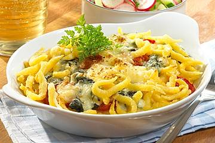

Käsespätzle Gratin
Zubereitung
1. Zwiebel und Knoblauch abziehen, Zwiebel in Würfel schneiden und Knoblauch zerdrücken. Beides mit Spinat in erhitztem Öl andünsten.
2. Kirschtomaten waschen, halbieren, mit den Spätzle zufügen und kurz miterhitzen.
3. Milch erhitzen, Blauschimmelkäse zugeben und unterrühren bis dieser geschmolzen ist. Mit Salz und Muskat abschmecken und mit Soßenbinder andicken.
4. Die Spinat-Spätzlemischung in eine Auflaufform geben, Sauce darüber gießen, mit Bergkäse bestreuen und im vorgeheizten Backofen bei 200° C (Gas: Stufe 4, Umluft 180° C) ca. 15-20 Minuten gratinieren.
5.Für den Salat Gurke schälen, der Länge nach halbieren, die Kerne entfernen und die Gurke in Scheiben schneiden.
6.Radieschen vom Grün schneiden, waschen, putzen und ebenfalls in Scheiben schneiden.
7.In einer Schüssel Zitronensaft, Öl, Gemüsebrühe und Schnittlauch verrühren und mit Salz und Pfeffer abschmecken. Gurken und Radieschen zugeben, vermischen und mit dem Gratin servieren.
Kleiner Tipp:Nach Wunsch mit frischem Kerbel garnieren.
Guten Appetit!